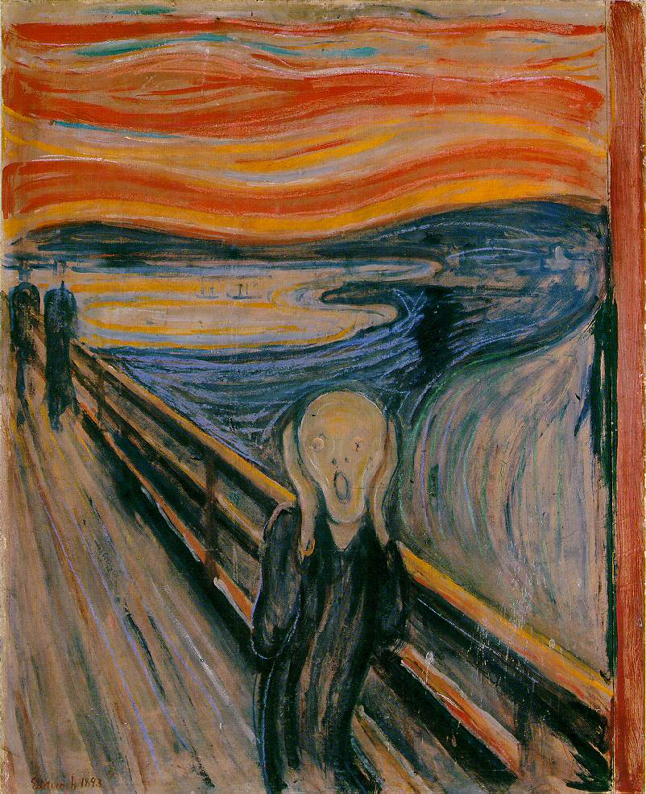
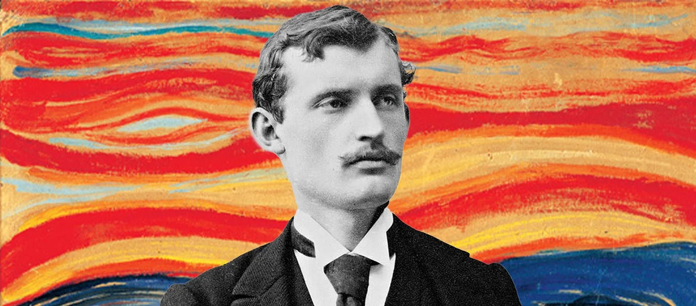
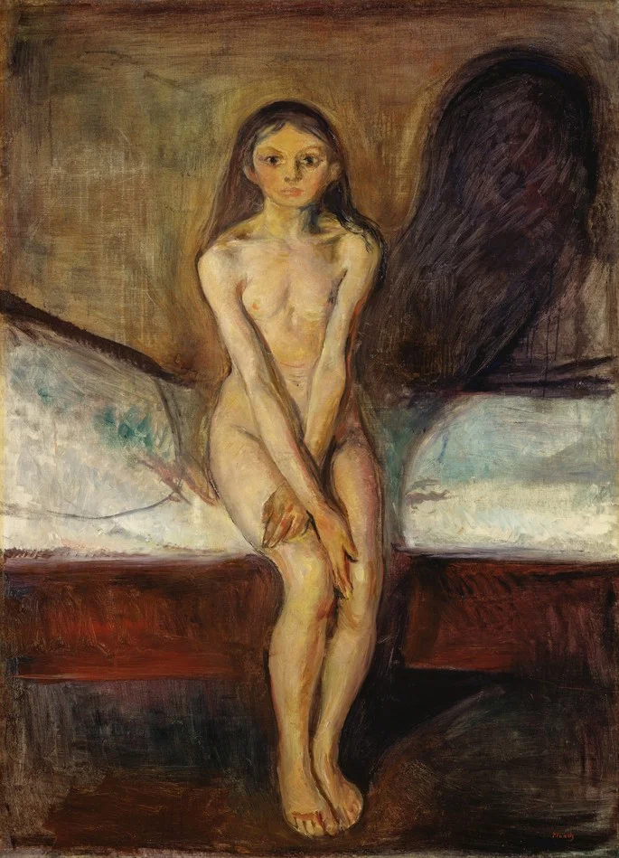
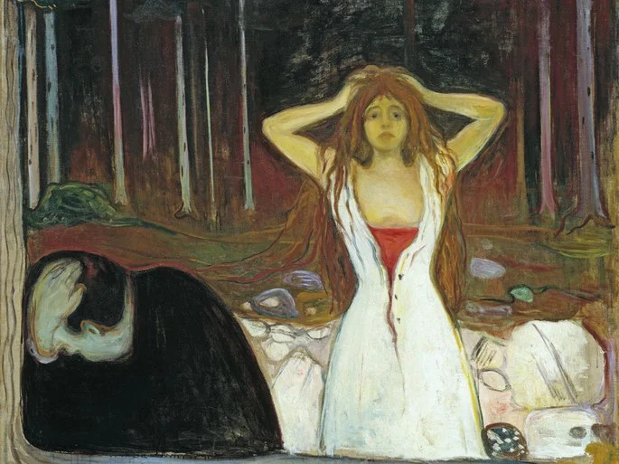
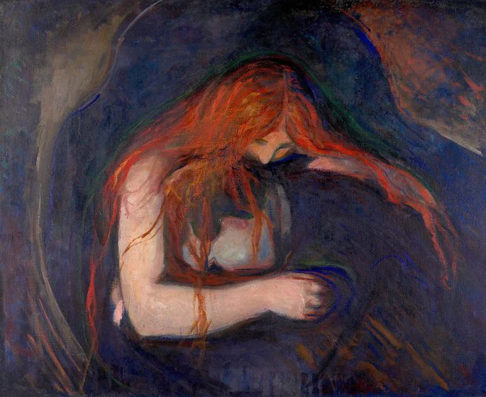

Diseño
Identidades y piezas visuales que conectan ideas con personas.
ESTUDIO MULTIMEDIAL / BUENOS AIRES
Ideas que toman forma.
Emociones que se vuelven digitales.
UNA MIRADA DIGITAL SOBRE
EDVARD MUNCH

01 / EL ESTUDIO
Tres miradas.
Un mismo impulso creativo.
Somos un equipo que encuentra en el diseño, el arte y la tecnología una forma de contar historias. Transformamos ideas en experiencias visuales con personalidad.
Este proyecto nace de una pregunta: ¿cómo trasladar la emoción de una pintura a un lenguaje digital?
Identidades y piezas visuales que conectan ideas con personas.
Historias que encuentran su expresión en la imagen y el movimiento.
Experiencias digitales donde lo creativo y lo funcional se encuentran.

02 / EL ARTISTA
Edvard Munch fue un artista noruego y un precursor fundamental del expresionismo. Su obra convirtió emociones como la angustia, el amor y la soledad en imágenes de gran intensidad.
Sus colores y formas no buscan solamente describir el mundo: nos invitan a sentirlo. Esa mirada inspira nuestra exploración digital.
Acercate a su obra03 / UNIVERSO MUNCH
Un recorrido por tres obras
de su universo pictórico.



04 / DEL PINCEL AL CÓDIGO
Una interpretación geométrica.
La misma emoción, otro lenguaje.
Preparando la obra…
El rostro, las manos, el puente y el paisaje se reconstruyen con figuras básicas. Círculos, elipses, triángulos y líneas se combinan para volver reconocible una imagen icónica.
El contraste entre el cielo cálido y el paisaje oscuro, junto con la perspectiva del puente, sostiene la tensión de esta versión.
Una nueva lectura de la obra original de Edvard Munch.
05 / CONECTEMOS
Contanos qué tenés en mente.
Le damos forma juntos.